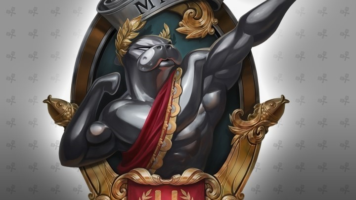

소환사의 협곡(Summoner`s Rift) : 리그 오브 레전드의 대표적인 전장으로 5 대 5로 구성되어 맞붙게 되는 전장이다. 각각의 팀은 상대편 진영의 넥서스를 파괴해야 승리를 할 수 있다. 칼바람 나락(Howling Abyss) : 5 대 5로 구성되며 공격로가 하나밖에 없는 전장이다. 소환사의 협곡과 동일하게 상대편 진영의 넥서스를 파괴해야 승리한다. 그 외에도 특별 한정 모드들인 'U.R.F. 모드', '초월 모드', '전설의 포로 왕 모드', '불의 축제 모드', '헥사 킬 모드', '단일 챔피언 모드', '니가가라 하와이 모드', '돌격! 넥서스 모드' 등이 존재한다.
